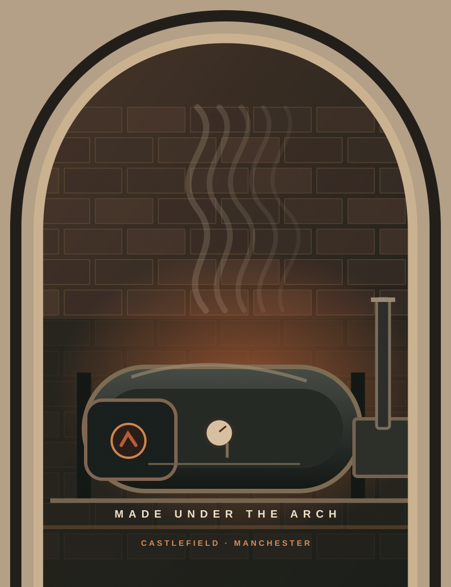
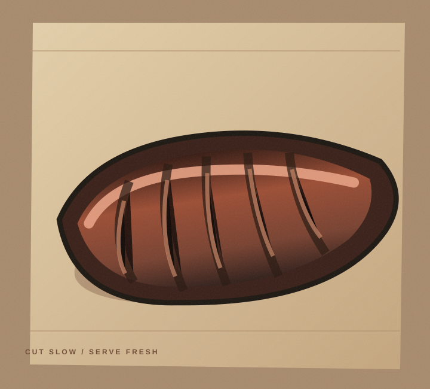
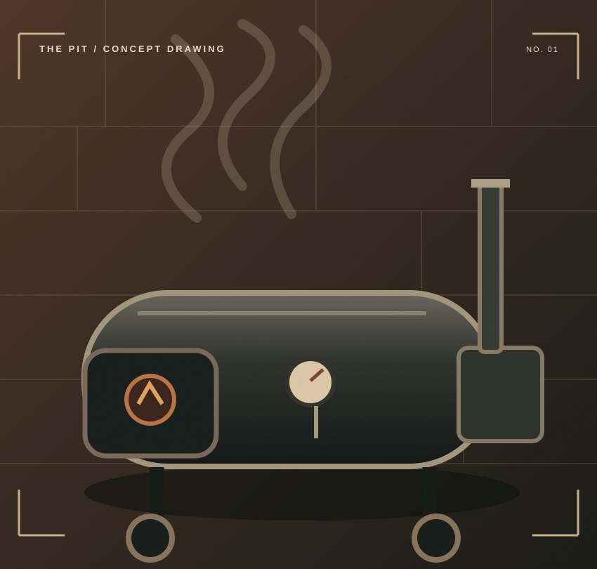

Pulled pork
& more.
Sandwiches and slow-smoked cuts, depending on what’s ready that day.
A MANCHESTER SMOKESHED / ARCH 121
Real fire. Time in the smoker. Texas-style BBQ made under the railway arches in Castlefield.

COME HUNGRY. COME EARLY. The meat is smoked in batches and service ends when it sells out.
Plan your visitOak, cherry and a lot of patience. These are the cuts that put Sandy’s on the map — availability changes with the day’s cook.

ILLUSTRATIVE ART · VENUE PHOTO PENDINGSlow-smoked beef, built for the queue. Reported highlights include brisket, short rib and smoked beef shin.
Meet the pitSandwiches and slow-smoked cuts, depending on what’s ready that day.
Pit beans, slaw and garlic BBQ sauce have featured in coverage of the shed.
Not a live menu. Cuts, sides and availability can change; confirm at the venue before travelling.

ILLUSTRATIVE PIT DRAWING / ACTUAL SMOKER PHOTO PENDING02 / BEHIND THE SMOKE
The smoker has a name. Sam calls her Angela. The cuts get seasoned, the fire gets going, and the rest is down to time.
Launch coverage reports Tuesday–Saturday service from 11am, until sold out. Hours and availability may have changed; check directly with the business before visiting.
HOURS SOURCE: AUGUST 2026 · NOT A LIVE STATUS